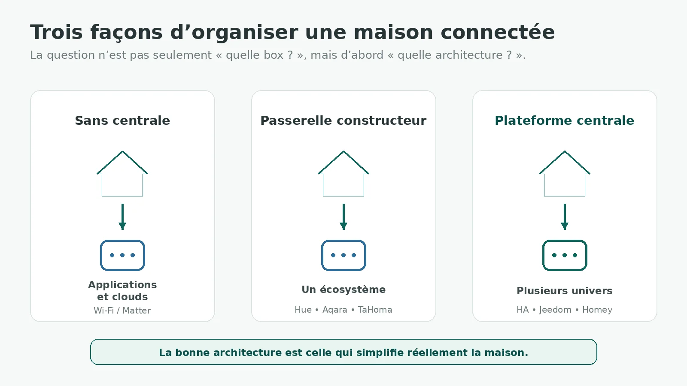
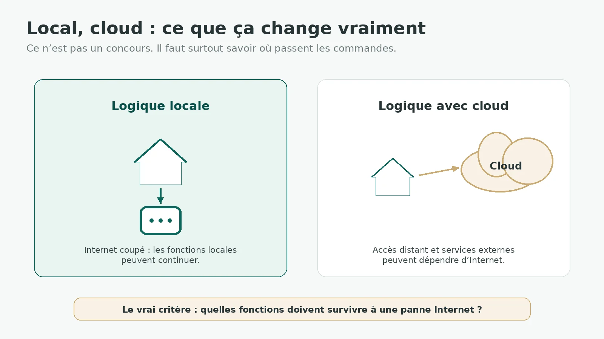
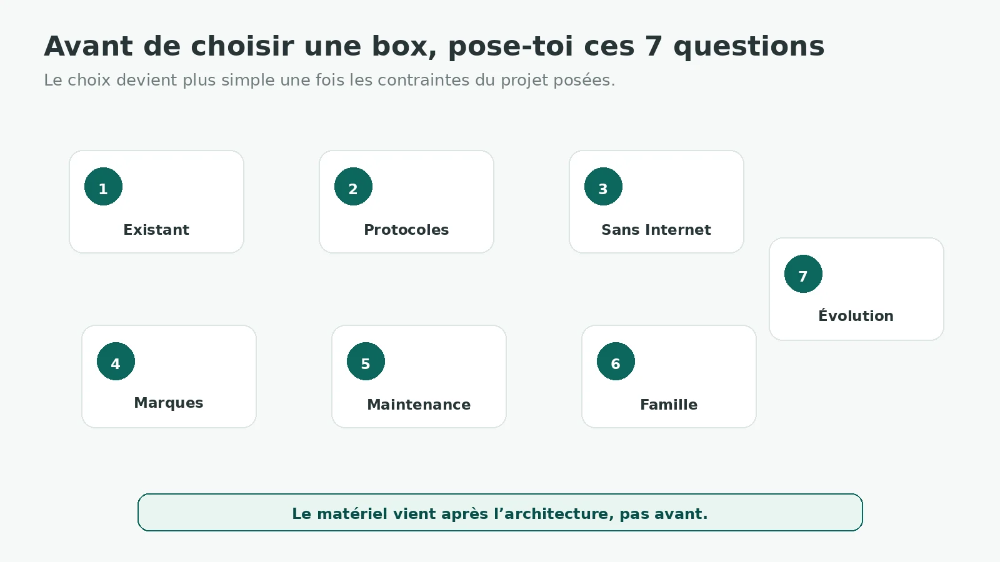

Quand une installation commence à mélanger des volets, des capteurs, de l’éclairage, du chauffage et plusieurs marques, la question arrive vite : faut-il une box domotique pour mettre tout ça au même endroit ?
La réponse n’est pas automatiquement oui. Pour quelques appareils simples, une plateforme centrale peut être inutile. À l’inverse, quand les applications se multiplient, que les automatismes doivent faire dialoguer plusieurs écosystèmes ou que certaines fonctions doivent continuer sans Internet, la centralisation devient beaucoup plus intéressante.
1. Une box domotique, ça sert à quoi exactement ?
Une box domotique est avant tout un point de centralisation. Elle peut réunir des appareils de plusieurs marques, héberger des automatismes, proposer une interface commune et parfois intégrer directement certaines radios.
Son rôle peut être très différent selon la solution. Une passerelle constructeur sert souvent principalement son propre écosystème. Une plateforme comme Home Assistant ou Jeedom peut être installée sur différents matériels et étendue avec des radios ou des intégrations. Homey Pro adopte une autre approche : davantage de technologies radio sont intégrées directement dans le produit.
Il faut donc éviter une confusion : une box domotique n’est pas forcément une radio universelle. Installer Home Assistant ne donne pas automatiquement Zigbee ou Z-Wave à la machine. Selon l’architecture choisie, il faudra ajouter un coordinateur, un contrôleur ou conserver certaines passerelles.
2. Faut-il vraiment une box domotique ?
Quand on peut très bien s’en passer
Si ton installation se limite à quelques appareils autonomes — deux prises Wi‑Fi, un thermostat bien intégré ou quelques équipements Matter déjà pilotés par ton environnement habituel — une plateforme supplémentaire n’est pas forcément utile.
Ajouter une box uniquement parce qu’une installation « sérieuse » devrait en avoir une revient à ajouter une chose de plus à mettre à jour, sauvegarder et dépanner.
Quand une box commence à avoir du sens
- faire travailler ensemble plusieurs marques ou protocoles ;
- créer des automatismes qui dépassent une application constructeur ;
- réduire le nombre d’applications utilisées au quotidien ;
- conserver davantage de fonctions en local ;
- avoir une vision globale des états, capteurs et scénarios ;
- faire évoluer l’installation sans repartir de zéro à chaque nouveau produit.
Le bon critère :
Une box devient utile quand elle simplifie réellement l’architecture. Si elle ne fait qu’ajouter une couche entre toi et trois appareils déjà simples à utiliser, elle n’apporte pas forcément grand-chose.
3. Sans centrale, passerelle constructeur ou plateforme centrale : trois architectures différentes

Sans centrale, chaque appareil ou service reste principalement géré par son application ou son cloud. C’est simple tant que le nombre de produits reste faible et que les interactions entre eux sont limitées.
Avec une passerelle constructeur, plusieurs appareils d’une même famille sont déjà regroupés : Hue pour l’éclairage, Aqara pour une partie de ses appareils, TaHoma pour l’écosystème Somfy, par exemple.
Une plateforme centrale vise plutôt à rassembler plusieurs univers dans une logique commune. Elle devient le cerveau transversal de l’installation, tout en pouvant continuer à s’appuyer sur certaines passerelles lorsqu’elles sont utiles.
4. Une passerelle constructeur est-elle forcément une mauvaise solution ?
Non. Et chercher à supprimer toutes les passerelles à tout prix peut même compliquer inutilement une installation.
- compatibilité officiellement testée avec les produits de la marque ;
- fonctions spécifiques que les intégrations tierces n’exposent pas toujours ;
- installation plus simple pour quelqu’un qui ne souhaite pas administrer une plateforme centrale ;
- support constructeur plus clair en cas de problème.
Son principal défaut apparaît lorsque chaque nouvel achat ajoute son propre hub et sa propre application. À partir d’un certain point, le système reste fonctionnel mais devient difficile à comprendre.
5. Home Assistant : très ouvert, mais pas une box magique
Home Assistant est une plateforme open source qui met le contrôle local et la confidentialité au centre de son fonctionnement. Le projet annonce aujourd’hui plus de 1 500 intégrations et stocke les données localement sur le matériel qui héberge Home Assistant.
Son intérêt est surtout sa capacité à réunir des équipements très différents dans une même logique. Zigbee, Z-Wave, Matter, Thread ou de nombreuses intégrations LAN peuvent fonctionner localement lorsque les appareils eux-mêmes le permettent.
Mais cette souplesse a une contrepartie : tu deviens davantage responsable de l’architecture. Il faut choisir le matériel, prévoir les radios nécessaires, organiser les sauvegardes et accepter de maintenir la plateforme dans le temps.
Home Assistant Cloud existe comme service optionnel pour simplifier l’accès à distance et certaines intégrations vocales. Home Assistant lui-même fonctionne sans cet abonnement.
Je m’arrête volontairement ici : le futur guide « Home Assistant est-il fait pour vous ? » ira beaucoup plus loin sur ce que cette liberté implique réellement au quotidien.
6. Jeedom : une autre approche de la domotique ouverte
Jeedom est également un logiciel open source et peut fonctionner sans abonnement ni service cloud obligatoire. Il peut être installé sur différents matériels compatibles ou utilisé via des box officielles.
L’écosystème repose beaucoup sur les plugins pour étendre les possibilités et connecter les équipements. Certains sont gratuits, d’autres payants ou peuvent eux-mêmes nécessiter un accès Internet selon le service utilisé.
Comme Home Assistant, Jeedom permet donc de construire une architecture très locale et personnalisable. La comparaison intéressante n’est pas « lequel est le meilleur ? », mais quelle manière d’administrer la maison te convient le mieux : interface, plugins, matériel, maintenance et habitudes.
7. Homey : l’approche multiprotocole plus intégrée
Homey Pro 2026 prend une direction différente : le matériel intègre directement plusieurs technologies, notamment Zigbee, Z-Wave, Matter, Thread, Bluetooth, 433 MHz et infrarouge.
La logique principale de Homey Pro est exécutée localement. Les modèles récents permettent aussi de créer des utilisateurs locaux pour accéder à l’interface Web sur le réseau local sans dépendre de l’authentification cloud.
Cela donne une architecture plus « produit fini » : moins de radios externes à assembler, une interface commune et un écosystème d’applications propre à Homey.
Il faut toutefois distinguer Homey Pro de Homey Cloud. Le premier est une plateforme matérielle locale ; le second est une offre cloud avec un modèle et des contraintes différents.
8. Home Assistant, Jeedom, Homey Pro ou passerelle constructeur : que compare-t-on vraiment ?
| Critère | Home Assistant | Jeedom | Homey Pro | Passerelle constructeur |
|---|---|---|---|---|
| Logique | Plateforme ouverte à composer | Plateforme ouverte à composer | Plateforme + matériel intégré | Écosystème d’une marque |
| Local | Au cœur du projet | Sans cloud obligatoire | Traitement local | Dépend du fabricant |
| Radios | À ajouter selon le matériel | Selon la box ou les contrôleurs | Plusieurs radios intégrées | Celles prévues par l’écosystème |
| Extensions | Intégrations | Plugins | Apps Homey | Plus limitées |
| Maintenance | Utilisateur impliqué | Utilisateur impliqué | Plus intégrée au produit | Principalement fabricant |
| Évolutivité | Très large selon intégrations et matériel | Large selon plugins et contrôleurs | Large dans le cadre Homey | Plus centrée sur la marque |
Ce tableau ne donne pas de gagnant. Il montre surtout que les quatre approches ne demandent pas le même investissement à l’utilisateur.
9. Home Assistant ou Jeedom ? Homey ou Home Assistant ?
Home Assistant et Jeedom peuvent tous les deux fonctionner largement en local et être fortement personnalisés. Les différences se jouent donc beaucoup dans l’écosystème logiciel, les extensions disponibles, l’interface et la manière dont chacun préfère administrer sa maison.
Le contraste avec Homey Pro est plus visible : Homey intègre davantage de radios directement dans un appareil conçu comme un produit complet. Home Assistant peut être extrêmement ouvert, mais l’architecture matérielle dépend davantage de ce que tu décides d’assembler.
Le choix oppose donc moins des listes de compatibilité qu’un niveau de liberté et de responsabilité technique.
10. Local et cloud : ce que cela change vraiment
« Fonctionne en local » est devenu un argument marketing, mais il faut regarder ce que cela signifie concrètement. Pour chaque fonction importante, demande-toi où l’automatisme est exécuté, ce qui se passe si Internet tombe et de quoi dépend l’accès à distance.

Une installation locale n’est pas automatiquement meilleure sur tous les critères. Le cloud peut simplifier l’accès à distance, certaines commandes vocales ou des services externes. L’objectif est surtout de ne pas rendre une fonction essentielle dépendante d’Internet sans le savoir.
11. Matter rend-il les box domotiques inutiles ?
Non. Matter réduit certaines barrières entre écosystèmes, mais il ne supprime pas les rôles d’une plateforme de maison connectée.
Un équipement peut jouer le rôle de Matter Controller, un autre de Thread Border Router, et certains hubs regroupent plusieurs de ces fonctions. La Connectivity Standards Alliance distingue justement contrôleur, bridge, plateforme, hub et routeur de bordure Thread.
Matter peut donc réduire le besoin de certaines passerelles propriétaires et améliorer l’interopérabilité. Mais si tu veux centraliser des automatismes, agréger des historiques ou faire dialoguer plusieurs technologies non-Matter, une plateforme centrale garde tout son intérêt.
12. Les 7 questions que je poserais avant de choisir une box

Remplacer un écosystème fiable uniquement pour repartir sur une architecture « parfaite » est rarement prioritaire.
Wi‑Fi, Zigbee, Z-Wave, Matter, Thread, 433 MHz : la liste détermine une partie du matériel nécessaire.
Éclairage, chauffage, volets et sécurité n’ont pas tous les mêmes exigences.
Plus elles sont nombreuses, plus la centralisation peut apporter de valeur.
Une plateforme très ouverte reste un système informatique qu’il faut sauvegarder et mettre à jour.
Une maison connectée ne doit pas devenir inutilisable dès que son administrateur n’est pas là.
Trois objets aujourd’hui et cinquante équipements demain ne conduisent pas forcément au même choix.
13. Dans quels cas je garderais simplement la passerelle du fabricant ?
Si l’installation est homogène et répond déjà au besoin, je ne chercherais pas à centraliser pour le principe.
Un logement principalement équipé dans un même écosystème peut très bien rester sur sa passerelle native. Une plateforme centrale devient surtout intéressante lorsque tu veux faire dialoguer plusieurs univers, créer des automatismes plus transversaux ou réduire une dépendance devenue gênante.
Et même dans ce cas, centraliser ne signifie pas nécessairement supprimer la passerelle : elle peut rester la couche radio ou constructeur pendant que Home Assistant, Jeedom ou une autre plateforme orchestre l’ensemble.
14. Faut-il prévoir une box dès le début de son projet ?
Pas obligatoirement. Pour commencer, je préfère un premier usage bien choisi à une grosse architecture préparée « au cas où ».
En revanche, réfléchir tôt à la direction générale évite de cumuler des achats incompatibles. C’est exactement l’objectif du guide DomoRepère pour débuter en domotique.
Si tu sais déjà que ton projet utilisera beaucoup de capteurs Zigbee ou plusieurs équipements Z-Wave, les guides dédiés permettent aussi de comprendre ce que la plateforme devra réellement prendre en charge : guide Zigbee et guide Z-Wave.
15. En résumé : quelle architecture choisir ?
Une box domotique n’est pas une obligation. C’est un outil de centralisation, et son intérêt augmente avec la diversité de l’installation, le besoin d’automatismes transversaux et l’importance donnée au fonctionnement local.
Une bonne box n’est pas celle qui sait théoriquement piloter le plus d’appareils. C’est celle qui centralise ce qui mérite de l’être sans rendre la maison plus difficile à maintenir.
Avant de regarder les marques, décide donc ce qui doit être local, quelles technologies sont déjà présentes, qui administrera le système et jusqu’où il devra évoluer. Le choix entre Home Assistant, Jeedom, Homey ou une passerelle constructeur devient alors beaucoup moins abstrait.
Questions fréquentes
Peut-on faire de la domotique sans box ?
Oui. De nombreux appareils Wi‑Fi ou Matter peuvent fonctionner sans box domotique dédiée. Une centrale devient surtout utile pour réunir plusieurs marques, protocoles et automatismes.
Quelle box domotique choisir pour Zigbee et Z-Wave ?
Il faut d’abord vérifier la présence réelle des radios ou la possibilité d’ajouter des contrôleurs compatibles. Homey Pro intègre notamment Zigbee et Z-Wave ; Home Assistant ou Jeedom peuvent gérer ces protocoles avec le matériel radio adapté.
Home Assistant fonctionne-t-il sans Internet ?
Oui pour les fonctions et intégrations locales. Certaines intégrations cloud ou certains services distants nécessitent évidemment Internet. Home Assistant Cloud est optionnel.
Jeedom a-t-il besoin du cloud ?
Non. La documentation Jeedom indique que le logiciel peut fonctionner localement sans abonnement ni cloud obligatoire. Certains plugins ou services optionnels peuvent toutefois utiliser Internet.
Homey Pro fonctionne-t-il sans Internet ?
Le traitement principal de Homey Pro est local et Homey indique qu’il peut continuer à fonctionner lors d’une panne Internet. Certaines fonctions en ligne ou intégrations externes nécessitent naturellement une connexion.
Matter remplace-t-il une box domotique ?
Pas forcément. Matter améliore surtout l’interopérabilité. Il ne remplace pas à lui seul les fonctions de centralisation, d’automatisation, d’historique ou de gestion de protocoles non-Matter.
- Home Assistant — plateforme et intégrations
- Home Assistant — données locales et confidentialité
- Home Assistant Cloud — service optionnel
- Jeedom — installation et fonctionnement sans cloud obligatoire
- Jeedom — FAQ cloud et abonnement
- Homey Pro — radios intégrées et traitement local
- Homey — comparaison des modèles Pro
- CSA — rôles Matter, hubs et Thread Border Routers